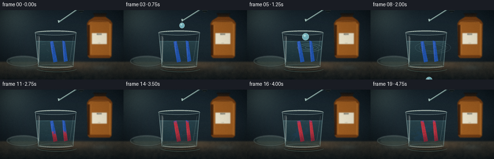
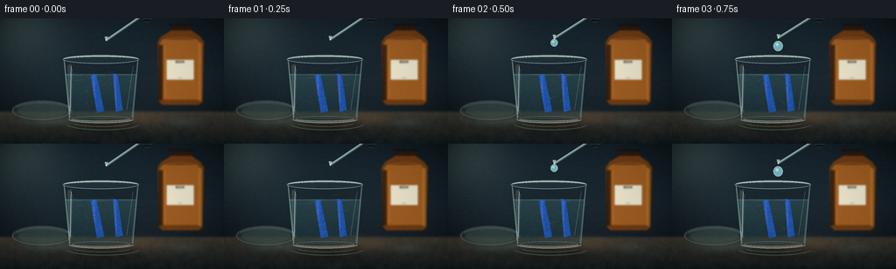
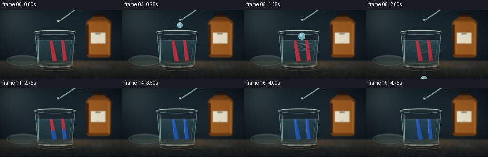
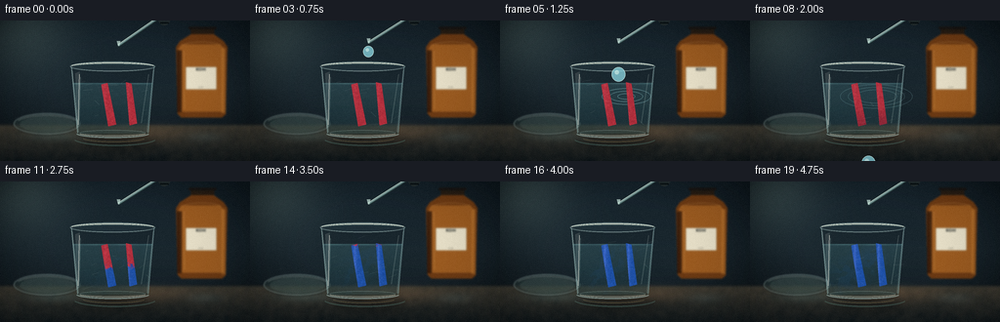
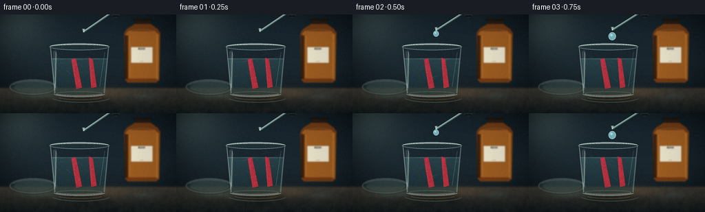
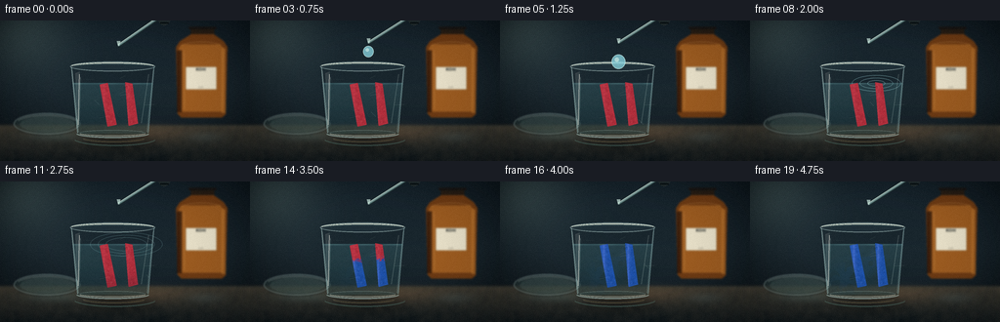

CODING AGENTS AS PIXEL WORLD MODELS
traex/DeepSeek-V4.1-Flash · material_0033
点击播放 · 原生 RGB 像素
逐轮保存的候选
回放视频、检查图与代码变化。
每份候选均可单独播放。实际图片检查记录在下方工具轨迹中。
候选 01播放与检查图
点击播放 · 原生 RGB 像素


展开代码变化
--- 上一保存版本
+++ 本次保存版本
@@ -0,0 +1,499 @@
+from __future__ import annotations
+
+import math
+from pathlib import Path
+
+import numpy as np
+from PIL import Image, ImageDraw, ImageFilter, ImageFont
+from scipy import ndimage
+
+import artifact_io
+
+
+ROOT = Path(__file__).resolve().parent
+W, H, N, FPS = 256, 144, 20, 4.0
+S = 4
+RW, RH = W * S, H * S
+
+
+def smoothstep(a, b, x):
+ x = np.clip((x - a) / (b - a), 0.0, 1.0)
+ return x * x * (3.0 - 2.0 * x)
+
+
+def ease(t):
+ t = float(np.clip(t, 0.0, 1.0))
+ return t * t * (3.0 - 2.0 * t)
+
+
+def rgba(color, alpha=255):
+ if len(color) == 4:
+ return color
+ return (*color, alpha)
+
+
+def composite(base, layer, mask=None):
+ a = np.asarray(layer, dtype=np.float32)
+ if a.shape[-1] == 4:
+ alpha = a[..., 3:4] / 255.0
+ rgb = a[..., :3]
+ else:
+ rgb = a
+ alpha = np.ones((*a.shape[:2], 1), dtype=np.float32)
+ if mask is not None:
+ alpha = alpha * mask[..., None]
+ out = np.asarray(base, dtype=np.float32)
+ return np.clip(rgb * alpha + out * (1.0 - alpha), 0, 255).astype(np.uint8)
+
+
+def vgradient(w, h, top, bottom):
+ t = np.linspace(0, 1, h, dtype=np.float32)[:, None, None]
+ top = np.asarray(top, dtype=np.float32)
+ bottom = np.asarray(bottom, dtype=np.float32)
+ arr = top * (1 - t) + bottom * t
+ return np.repeat(arr, w, axis=1).astype(np.uint8)
+
+
+def make_noise(rng, h, w, sigma, octaves=4):
+ out = np.zeros((h, w), dtype=np.float32)
+ amp = 1.0
+ total = 0.0
+ for i in range(octaves):
+ low = rng.random((max(2, h // (2 ** (i + 1))), max(2, w // (2 ** (i + 1)))))
+ layer = np.asarray(
+ Image.fromarray((low * 255).astype(np.uint8)).resize((w, h), Image.Resampling.BICUBIC),
+ dtype=np.float32,
+ ) / 255.0
+ out += layer * amp
+ total += amp
+ amp *= 0.52
+ out /= total
+ if sigma:
+ out = ndimage.gaussian_filter(out, sigma)
+ out -= out.min()
+ out /= max(out.max(), 1e-6)
+ return out
+
+
+def polygon_mask(size, points, blur=0):
+ w, h = size
+ im = Image.new("L", (w, h), 0)
+ ImageDraw.Draw(im).polygon([(int(x), int(y)) for x, y in points], fill=255)
+ if blur:
+ im = im.filter(ImageFilter.GaussianBlur(blur))
+ return np.asarray(im, dtype=np.float32) / 255.0
+
+
+def ellipse_mask(size, box, blur=0):
+ w, h = size
+ im = Image.new("L", (w, h), 0)
+ ImageDraw.Draw(im).ellipse(box, fill=255)
+ if blur:
+ im = im.filter(ImageFilter.GaussianBlur(blur))
+ return np.asarray(im, dtype=np.float32) / 255.0
+
+
+def draw_soft_shadow(scene, mask, offset, blur, strength=0.45):
+ shifted = ndimage.shift(mask, shift=(offset[1], offset[0]), order=1, mode="constant")
+ shadow = ndimage.gaussian_filter(shifted, blur)
+ arr = scene.astype(np.float32)
+ arr *= (1.0 - strength * shadow[..., None])
+ return np.clip(arr, 0, 255).astype(np.uint8)
+
+
+def add_blurred_glow(scene, glow, sigma=8):
+ arr = scene.astype(np.float32)
+ blurred = ndimage.gaussian_filter(glow.astype(np.float32), sigma=(sigma, sigma, 0))
+ arr = 255.0 - (255.0 - arr) * (255.0 - blurred) / 255.0
+ return np.clip(arr, 0, 255).astype(np.uint8)
+
+
+def color_mix(a, b, t):
+ a = np.asarray(a, dtype=np.float32)
+ b = np.asarray(b, dtype=np.float32)
+ return a * (1 - t) + b * t
+
+
+def build_background(rng):
+ yy = np.linspace(0, 1, RH, dtype=np.float32)[:, None]
+ xx = np.linspace(0, 1, RW, dtype=np.float32)[None, :]
+ wall = np.empty((RH, RW, 3), dtype=np.float32)
+ top = np.array([24, 35, 42], dtype=np.float32)
+ mid = np.array([31, 42, 48], dtype=np.float32)
+ bottom = np.array([12, 20, 25], dtype=np.float32)
+ t = yy
+ wall[:] = top * (1 - t[..., None]) + mid * t[..., None]
+ wall *= 1.0 - 0.28 * np.clip((yy - 0.48) / 0.52, 0, 1)[..., None]
+
+ # Broad window light from the upper left, softened by the shallow focus.
+ glow = np.exp(-(((xx - 0.08) / 0.27) ** 2 + ((yy - 0.05) / 0.45) ** 2) * 2.0)
+ wall += glow[..., None] * np.array([30, 35, 31], dtype=np.float32)
+ vignette = np.clip(1.18 - 0.55 * (((xx - 0.5) / 0.7) ** 2 + ((yy - 0.43) / 0.8) ** 2), 0.5, 1.1)
+ wall *= vignette[..., None]
+ scene = np.clip(wall, 0, 255).astype(np.uint8)
+
+ # Out-of-focus bench horizon.
+ horizon = int(0.745 * RH)
+ bench = vgradient(RW, RH - horizon, (61, 58, 50), (24, 30, 32))
+ scene[horizon:] = bench
+ bench_mask = np.zeros((RH, RW), dtype=np.float32)
+ bench_mask[horizon:] = 1.0
+ bench_mask = ndimage.gaussian_filter(bench_mask, 1.2)
+ wood = make_noise(rng, RH, RW, 1.6, 4)
+ streak = make_noise(rng, RH, RW, 8.0, 3)
+ wood_detail = (wood - 0.5) * 13.0 + (streak - 0.5) * 15.0
+ arr = scene.astype(np.float32)
+ arr += (wood_detail * bench_mask)[..., None] * np.array([1.0, 0.76, 0.52])
+ scene = np.clip(arr, 0, 255).astype(np.uint8)
+
+ # Soft reflected color pools on the tabletop.
+ overlay = np.zeros_like(scene, dtype=np.float32)
+ for cx, cy, sx, sy, col in [
+ (0.22, 0.82, 0.16, 0.055, (67, 112, 116)),
+ (0.57, 0.80, 0.25, 0.08, (135, 85, 49)),
+ (0.82, 0.83, 0.10, 0.05, (42, 67, 74)),
+ ]:
+ m = np.exp(-(((xx - cx) / sx) ** 2 + ((yy - cy) / sy) ** 2) * 2.0)
+ overlay += m[..., None] * np.array(col, dtype=np.float32) * 0.18
+ scene = np.clip(scene.astype(np.float32) + overlay, 0, 255).astype(np.uint8)
+
+ # Blur the back plane before bringing the glassware into focus.
+ scene = np.asarray(Image.fromarray(scene).filter(ImageFilter.GaussianBlur(4.2)))
+ return scene
+
+
+def draw_background_bottle(scene, rng):
+ im = Image.fromarray(scene)
+ d = ImageDraw.Draw(im, "RGBA")
+ # Amber KOH stock bottle, intentionally behind the focal plane.
+ bx0, bx1 = int(0.705 * RW), int(0.91 * RW)
+ by0, by1 = int(0.14 * RH), int(0.69 * RH)
+ neck_l, neck_r = int(0.777 * RW), int(0.844 * RW)
+ neck_t = int(0.055 * RH)
+ body = [(bx0, by0 + 28), (bx0 + 16, by0 + 4), (neck_l, neck_t + 17),
+ (neck_r, neck_t + 17), (bx1 - 16, by0 + 4), (bx1, by0 + 28),
+ (bx1 - 7, by1 - 13), (bx1 - 22, by1), (bx0 + 21, by1),
+ (bx0 + 6, by1 - 15)]
+ d.polygon(body, fill=(107, 60, 24, 255))
+ d.polygon([(bx0 + 11, by0 + 33), (bx0 + 24, by0 + 18), (bx1 - 31, by0 + 18),
+ (bx1 - 13, by0 + 35), (bx1 - 17, by1 - 24), (bx0 + 18, by1 - 24)],
+ fill=(151, 91, 36, 255))
+ d.rectangle((bx0 + 4, by0 + 42, bx0 + 23, by1 - 22), fill=(43, 24, 13, 190))
+ d.rectangle((bx1 - 24, by0 + 34, bx1 - 8, by1 - 18), fill=(192, 126, 53, 105))
+ d.rectangle((int(0.763 * RW), neck_t, int(0.857 * RW), neck_t + 24), fill=(40, 31, 23, 255))
+ d.rounded_rectangle((int(0.754 * RW), neck_t - 6, int(0.866 * RW), neck_t + 5), radius=4,
+ fill=(27, 25, 23, 255))
+ # White stock label with a strong, legible KOH marking.
+ lx0, lx1 = int(0.744 * RW), int(0.866 * RW)
+ ly0, ly1 = int(0.33 * RH), int(0.49 * RH)
+ d.rounded_rectangle((lx0, ly0, lx1, ly1), radius=3, fill=(225, 220, 199, 245),
+ outline=(96, 82, 63, 180), width=1)
+ font = ImageFont.truetype("/usr/share/fonts/truetype/dejavu/DejaVuSans-Bold.ttf", 17)
+ d.text(((lx0 + lx1) // 2, ly0 + 4), "KOH", font=font, fill=(46, 50, 48, 255), anchor="mt")
+ font_small = ImageFont.truetype("/usr/share/fonts/truetype/dejavu/DejaVuSans.ttf", 7)
+ d.text(((lx0 + lx1) // 2, ly1 - 9), "0.1 M", font=font_small, fill=(80, 78, 69, 220), anchor="mm")
+ # Bottle shine and meniscus.
+ d.line((bx0 + 32, by0 + 43, bx0 + 34, by1 - 36), fill=(230, 176, 103, 70), width=3)
+ d.arc((bx0 + 14, by0 + 7, bx1 - 16, by0 + 55), 195, 335, fill=(236, 174, 98, 100), width=2)
+ scene = np.asarray(im.filter(ImageFilter.GaussianBlur(2.3)))
+ return scene
+
+
+def draw_petri_dish(scene, rng):
+ im = Image.fromarray(scene)
+ d = ImageDraw.Draw(im, "RGBA")
+ # A small, soft-focus dish at left supplies depth and lab context.
+ box = (int(0.055 * RW), int(0.66 * RH), int(0.32 * RW), int(0.81 * RH))
+ d.ellipse((box[0], box[1] + 5, box[2], box[3] + 5), fill=(15, 20, 20, 90))
+ d.ellipse(box, fill=(96, 128, 126, 45), outline=(184, 205, 198, 120), width=3)
+ d.arc((box[0] + 6, box[1] + 8, box[2] - 6, box[3] - 3), 205, 335,
+ fill=(220, 232, 220, 130), width=2)
+ d.ellipse((box[0] + 25, box[1] + 12, box[2] - 21, box[3] - 8), fill=(81, 102, 96, 75))
+ scene = np.asarray(im.filter(ImageFilter.GaussianBlur(2.7)))
+ return scene
+
+
+def beaker_geometry():
+ left_t, right_t = int(0.286 * RW), int(0.616 * RW)
+ left_b, right_b = int(0.310 * RW), int(0.592 * RW)
+ top, bottom = int(0.323 * RH), int(0.817 * RH)
+ return left_t, right_t, left_b, right_b, top, bottom
+
+
+def make_strip_mask(points, rng, phase):
+ mask = polygon_mask((RW, RH), points, blur=0)
+ edge_noise = make_noise(rng, RH, RW, 0.7, 3)
+ edge = ndimage.gaussian_filter(mask, 1.4)
+ paper_edge = smoothstep(0.37, 0.63, edge + (edge_noise - 0.5) * 0.11)
+ return paper_edge
+
+
+def draw_litmus_strip(scene, points, rng, transition, seed_phase, accent=0):
+ yy, xx = np.mgrid[0:RH, 0:RW].astype(np.float32)
+ mask = make_strip_mask(points, rng, seed_phase)
+ if mask.max() < 0.1:
+ return scene
+ ys, xs = np.where(mask > 0.18)
+ if len(xs) == 0:
+ return scene
+ x0, x1, y0, y1 = xs.min(), xs.max(), ys.min(), ys.max()
+ fine = make_noise(rng, RH, RW, 0.55, 5)
+ broad = make_noise(rng, RH, RW, 2.2, 4)
+
+ # The reaction front climbs the strip with a wet, irregular edge.
+ y_norm = np.clip((yy - y0) / max(1, y1 - y0), 0, 1)
+ x_norm = np.clip((xx - x0) / max(1, x1 - x0), 0, 1)
+ front = smoothstep(0.08, 0.92, transition)
+ irregular = (broad - 0.5) * 0.25 + (fine - 0.5) * 0.08
+ turn = smoothstep(front + irregular - 0.11, front + irregular + 0.08,
+ 1.0 - y_norm * 0.92 + x_norm * 0.05)
+ # Early wetting appears as a darker lower edge; blue develops behind it.
+ wet = smoothstep(0.02, 0.40, transition) * smoothstep(0.50, 1.0, y_norm)
+ red = np.array([184, 53, 66], dtype=np.float32)
+ wet_red = np.array([128, 40, 57], dtype=np.float32)
+ violet = np.array([112, 56, 135], dtype=np.float32)
+ blue = np.array([39, 91, 180], dtype=np.float32)
+ deep_blue = np.array([24, 58, 130], dtype=np.float32)
+ base = red[None, None, :] * (1 - wet[..., None]) + wet_red[None, None, :] * wet[..., None]
+ early = base * (1 - turn[..., None]) + violet[None, None, :] * turn[..., None]
+ color = early * (1 - turn[..., None] ** 1.7) + blue[None, None, :] * (turn[..., None] ** 1.7)
+ color = color * (1 - 0.16 * smoothstep(0.55, 1.0, turn)[..., None]) + deep_blue * (
+ 0.16 * smoothstep(0.55, 1.0, turn)[..., None]
+ )
+
+ # Fibrous paper grain and a translucent wet sheen.
+ fibers = ndimage.gaussian_filter(rng.normal(0, 1, (RH, RW)).astype(np.float32), (0.6, 1.7))
+ fibers /= max(np.abs(fibers).max(), 1e-6)
+ speck = (fine - 0.5) * 19 + fibers * 10
+ shade = 0.87 + 0.17 * broad
+ color *= shade[..., None]
+ color += speck[..., None]
+ sheen = np.clip((1.0 - np.abs(x_norm - 0.24)) ** 9, 0, 1) * (0.8 + 0.2 * broad)
+ color += sheen[..., None] * np.array([34, 26, 34], dtype=np.float32) * (0.3 + 0.7 * turn[..., None])
+
+ # Slightly darker, damp border.
+ border = np.clip(1.0 - ndimage.gaussian_filter(mask, 2.0) * 2.2, 0, 1)
+ color *= 1.0 - 0.24 * border[..., None]
+ alpha = np.clip(mask * 0.97, 0, 1)
+ layer = np.dstack([np.clip(color, 0, 255), alpha * 255]).astype(np.uint8)
+ return composite(scene, layer)
+
+
+def liquid_mask_and_surface(phase=0.0):
+ lt, rt, lb, rb, top, bottom = beaker_geometry()
+ liquid_top = int(0.445 * RH)
+ yy, xx = np.mgrid[0:RH, 0:RW].astype(np.float32)
+ left = lt + (lb - lt) * np.clip((yy - top) / (bottom - top), 0, 1)
+ right = rt + (rb - rt) * np.clip((yy - top) / (bottom - top), 0, 1)
+ body = smoothstep(-2.5, 2.5, xx - left) * smoothstep(-2.5, 2.5, right - xx)
+ body *= smoothstep(liquid_top - 3, liquid_top + 2, yy) * smoothstep(bottom - 3, bottom - 9, yy)
+ return body.astype(np.float32), liquid_top
+
+
+def draw_liquid(scene, rng, frame_index, transition):
+ mask, liquid_top = liquid_mask_and_surface()
+ yy, xx = np.mgrid[0:RH, 0:RW].astype(np.float32)
+ lt, rt, lb, rb, top, bottom = beaker_geometry()
+ body = mask
+ liquid_noise = make_noise(rng, RH, RW, 2.0, 5)
+ swirl = make_noise(rng, RH, RW, 7.5, 4)
+
+ # Pale water with a cool edge and warmer transmitted table light.
+ grad = np.clip((yy - liquid_top) / (bottom - liquid_top), 0, 1)
+ water = np.array([67, 113, 121], dtype=np.float32)[None, None, :] * (1 - grad[..., None])
+ water += np.array([40, 71, 75], dtype=np.float32)[None, None, :] * grad[..., None]
+ water += (liquid_noise[..., None] - 0.5) * 14
+ alpha = 0.34 * body
+
+ # Blue reagent blooms near the papers and the drop impact.
+ bloom = np.zeros((RH, RW), dtype=np.float32)
+ centers = [
+ (0.445 + 0.012 * math.sin(frame_index * 0.7), 0.60, 0.072, 0.14),
+ (0.400 + 0.018 * math.sin(frame_index * 0.5 + 1), 0.68, 0.090, 0.16),
+ (0.505, 0.53 + 0.010 * math.cos(frame_index * 0.6), 0.060, 0.11),
+ ]
+ for i, (cx, cy, sx, sy) in enumerate(centers):
+ m = np.exp(-(((xx / RW - cx) / sx) ** 2 + ((yy / RH - cy) / sy) ** 2) * 2.0)
+ bloom += m * (0.18 + 0.82 * transition) * (0.35 + 0.65 * (swirl > 0.5))
+ bloom = np.clip(bloom, 0, 1) * body * (0.18 + 0.55 * transition)
+ water = water * (1 - 0.38 * bloom[..., None]) + np.array([28, 72, 144], dtype=np.float32) * (
+ 0.38 * bloom[..., None]
+ )
+ alpha = np.clip(alpha + bloom * 0.18, 0, 0.62)
+
+ # Surface ellipse, meniscus, and a moving highlight.
+ surf_y = liquid_top
+ surface = np.exp(-((yy - surf_y) / 5.0) ** 2) * body
+ surface *= 0.42 + 0.22 * np.sin(xx * 0.025 + frame_index * 0.4) ** 2
+ water += surface[..., None] * np.array([85, 102, 93], dtype=np.float32)
+ alpha = np.clip(alpha + surface * 0.22, 0, 0.75)
+ layer = np.dstack([np.clip(water, 0, 255), alpha * 255]).astype(np.uint8)
+ scene = composite(scene, layer)
+
+ # Suspended particles and tiny bubbles around the drop.
+ im = Image.fromarray(scene)
+ d = ImageDraw.Draw(im, "RGBA")
+ for i in range(13):
+ px = int(0.38 * RW + ((i * 47 + frame_index * 9) % 140) * S)
+ py = min(RH - 1, int(0.57 * RH + ((i * 31 + frame_index * 4) % 92) * S))
+ if mask[py, px] > 0.5:
+ d.ellipse((px - 1, py - 1, px + 1, py + 1), fill=(184, 216, 205, 75))
+ if 5 <= frame_index <= 11:
+ age = (frame_index - 5) / 6.0
+ cx, cy = int(0.505 * RW), int(0.54 * RH)
+ for j in range(3):
+ rr = int((9 + j * 8 + age * 24) * S)
+ bb = (cx - rr, cy - rr // 3, cx + rr, cy + rr // 3)
+ d.ellipse(bb, outline=(164, 222, 225, int(120 * (1 - age))), width=2)
+ return np.asarray(im)
+
+
+def draw_glass(scene):
+ im = Image.fromarray(scene)
+ d = ImageDraw.Draw(im, "RGBA")
+ lt, rt, lb, rb, top, bottom = beaker_geometry()
+ rim_y = top
+ # Back rim and opening.
+ d.ellipse((lt - 5, rim_y - 18, rt + 5, rim_y + 22), fill=(66, 94, 98, 45),
+ outline=(185, 211, 206, 150), width=3)
+ d.arc((lt - 2, rim_y - 14, rt + 2, rim_y + 17), 190, 350, fill=(237, 242, 224, 225), width=4)
+ d.arc((lt + 8, rim_y - 8, rt - 8, rim_y + 12), 190, 350, fill=(111, 149, 147, 120), width=2)
+ # Transparent side walls and thicker base.
+ d.line((lt, rim_y + 5, lb, bottom - 10), fill=(183, 218, 213, 115), width=4)
+ d.line((rt, rim_y + 5, rb, bottom - 10), fill=(162, 203, 200, 105), width=4)
+ d.line((lt + 3, rim_y + 18, lb + 4, bottom - 13), fill=(226, 242, 229, 80), width=2)
+ d.line((rt - 3, rim_y + 16, rb - 5, bottom - 14), fill=(221, 240, 233, 72), width=2)
+ d.arc((lb - 8, bottom - 28, rb + 9, bottom + 11), 15, 166, fill=(189, 221, 216, 145), width=5)
+ d.arc((lb + 7, bottom - 18, rb - 8, bottom + 3), 12, 168, fill=(240, 242, 222, 125), width=3)
+ # Specular bands, carefully broken so the vessel reads as glass.
+ d.polygon([(lt + 16, rim_y + 30), (lt + 34, rim_y + 22), (lt + 30, bottom - 35),
+ (lt + 21, bottom - 30)], fill=(239, 249, 240, 29))
+ d.line((lt + 33, rim_y + 34, lt + 28, bottom - 43), fill=(250, 251, 238, 145), width=3)
+ d.line((lt + 37, rim_y + 46, lt + 32, bottom - 59), fill=(198, 231, 220, 84), width=2)
+ d.line((rt - 22, rim_y + 34, rb - 28, bottom - 50), fill=(226, 243, 232, 76), width=2)
+ # Thick elliptical base reflection.
+ d.ellipse((lb + 9, bottom - 21, rb - 11, bottom + 2), fill=(51, 85, 85, 36),
+ outline=(190, 219, 209, 72), width=2)
+ return np.asarray(im)
+
+
+def draw_pipette(scene, frame_index):
+ im = Image.fromarray(scene)
+ d = ImageDraw.Draw(im, "RGBA")
+ # Smooth entrance, dispensing, then a slight lift at the end.
+ if frame_index <= 3:
+ drop_in = ease(frame_index / 3.0)
+ elif frame_index <= 15:
+ drop_in = 1.0
+ else:
+ drop_in = 1.0 - 0.20 * ease((frame_index - 15) / 4.0)
+ tip_x = int(0.474 * RW)
+ tip_y = int((0.158 + 0.020 * (1 - drop_in)) * RH)
+ bulb_x, bulb_y = int(0.658 * RW), int(-0.05 * RH)
+ # Pipette body: a clean diagonal glass tube with a dark rubber bulb.
+ d.line((bulb_x, bulb_y, tip_x, tip_y), fill=(28, 40, 43, 255), width=16)
+ d.line((bulb_x - 1, bulb_y - 1, tip_x - 1, tip_y - 1), fill=(122, 153, 152, 235), width=10)
+ d.line((bulb_x - 3, bulb_y - 3, tip_x - 3, tip_y - 3), fill=(224, 234, 218, 105), width=3)
+ d.line((bulb_x + 4, bulb_y + 2, tip_x + 4, tip_y + 2), fill=(55, 79, 81, 180), width=3)
+ d.polygon([(tip_x - 7, tip_y - 18), (tip_x + 8, tip_y - 18), (tip_x + 3, tip_y + 2),
+ (tip_x - 2, tip_y + 2)], fill=(194, 220, 211, 180))
+ d.ellipse((bulb_x - 28, bulb_y - 25, bulb_x + 27, bulb_y + 48), fill=(36, 45, 47, 255))
+ d.arc((bulb_x - 23, bulb_y - 20, bulb_x + 21, bulb_y + 39), 195, 330,
+ fill=(121, 142, 137, 110), width=3)
+ # Rubber collar.
+ d.line((bulb_x - 17, bulb_y + 37, bulb_x + 17, bulb_y + 38), fill=(13, 20, 22, 255), width=8)
+ d.line((bulb_x - 14, bulb_y + 40, bulb_x + 13, bulb_y + 41), fill=(85, 99, 96, 110), width=2)
+
+ # Drop forms at the tip, detaches, and falls toward the liquid.
+ if 2 <= frame_index <= 8:
+ if frame_index <= 4:
+ dy = 4 + (frame_index - 2) * 4
+ r = 4 + (frame_index - 2) * 1.4
+ else:
+ dy = 19 + (frame_index - 4) ** 1.55 * 12
+ r = 7
+ drop_y = tip_y + dy * S
+ d.ellipse((tip_x - r * S, drop_y - r * S * 0.85, tip_x + r * S, drop_y + r * S * 1.25),
+ fill=(133, 202, 213, 205), outline=(225, 244, 232, 170), width=2)
+ d.ellipse((tip_x - r * S * 0.55, drop_y - r * S * 0.42,
+ tip_x + r * S * 0.10, drop_y + r * S * 0.22),
+ fill=(238, 251, 239, 115))
+ return np.asarray(im)
+
+
+def draw_glass_foreground(scene, rng):
+ im = Image.fromarray(scene)
+ d = ImageDraw.Draw(im, "RGBA")
+ lt, rt, lb, rb, top, bottom = beaker_geometry()
+ # Caustic lines cast by the beaker onto the bench.
+ d.arc((lb - 17, bottom - 17, rb + 35, bottom + 44), 15, 165,
+ fill=(116, 174, 162, 70), width=5)
+ d.arc((lb + 18, bottom - 7, rb - 9, bottom + 28), 18, 164,
+ fill=(217, 191, 133, 72), width=3)
+ # Fine scratches and dust catch the side light.
+ for i in range(12):
+ x = int((0.31 + rng.random() * 0.28) * RW)
+ y = int((0.40 + rng.random() * 0.37) * RH)
+ ln = int((2 + rng.random() * 9) * S)
+ d.line((x, y, x + ln, y - int(rng.random() * 4 * S)),
+ fill=(220, 238, 226, int(22 + rng.random() * 28)), width=1)
+ return np.asarray(im)
+
+
+def add_post(scene, rng, frame_index):
+ arr = scene.astype(np.float32)
+ yy = np.linspace(0, 1, RH, dtype=np.float32)[:, None, None]
+ xx = np.linspace(0, 1, RW, dtype=np.float32)[None, :, None]
+ vignette = 1.04 - 0.20 * (((xx - 0.5) / 0.58) ** 2 + ((yy - 0.50) / 0.74) ** 2)
+ arr *= np.clip(vignette, 0.68, 1.0)
+ # Gentle filmic contrast.
+ arr = (arr - 128.0) * 1.055 + 128.0 + 2.0
+ arr = np.clip(arr, 0, 255)
+ scene = arr.astype(np.uint8)
+ scene = np.asarray(Image.fromarray(scene).filter(ImageFilter.GaussianBlur(0.34)))
+ return scene
+
+
+def render_frame(frame_index, rng_seed):
+ rng = np.random.default_rng(rng_seed)
+ scene = build_background(rng)
+ scene = draw_background_bottle(scene, rng)
+ scene = draw_petri_dish(scene, rng)
+
+ lt, rt, lb, rb, top, bottom = beaker_geometry()
+ # Soft contact shadow beneath the beaker.
+ base_mask = ellipse_mask((RW, RH), (lb - 9, bottom - 8, rb + 12, bottom + 26), 0)
+ scene = draw_soft_shadow(scene, base_mask, (7 * S, 4 * S), 8.0 * S, 0.55)
+
+ transition = float(smoothstep(5.0, 17.0, frame_index))
+ scene = draw_liquid(scene, rng, frame_index, transition)
+ # Two litmus strips, at slightly different depths and angles.
+ p1 = [(0.405 * RW, 0.455 * RH), (0.430 * RW, 0.444 * RH),
+ (0.465 * RW, 0.741 * RH), (0.433 * RW, 0.754 * RH)]
+ p2 = [(0.503 * RW, 0.438 * RH), (0.526 * RW, 0.449 * RH),
+ (0.548 * RW, 0.733 * RH), (0.518 * RW, 0.748 * RH)]
+ scene = draw_litmus_strip(scene, p1, rng, transition, 0.13)
+ scene = draw_litmus_strip(scene, p2, rng, min(1.0, transition * 0.96 + 0.03), 0.71)
+ scene = draw_glass(scene)
+ scene = draw_pipette(scene, frame_index)
+ scene = draw_glass_foreground(scene, rng)
+ scene = add_post(scene, rng, frame_index)
+
+ im = Image.fromarray(scene)
+ im = im.resize((W, H), Image.Resampling.LANCZOS)
+ arr = np.asarray(im, dtype=np.float32)
+ # A restrained final grain keeps the low-resolution RGB from looking vector-flat.
+ grain = np.random.default_rng(rng_seed + 900).normal(0, 1.25, (H, W, 1))
+ arr = np.clip(arr + grain, 0, 255)
+ return arr.astype(np.uint8)
+
+
+def main():
+ frames = []
+ for i in range(N):
+ frames.append(render_frame(i, 1400 + i * 23))
+ artifact_io.save(frames, ROOT)
+
+
+if __name__ == "__main__":
+ main()
候选 02播放与检查图
点击播放 · 原生 RGB 像素

展开代码变化
--- 上一保存版本
+++ 本次保存版本
@@ -243,10 +243,12 @@
# The reaction front climbs the strip with a wet, irregular edge.
y_norm = np.clip((yy - y0) / max(1, y1 - y0), 0, 1)
x_norm = np.clip((xx - x0) / max(1, x1 - x0), 0, 1)
- front = smoothstep(0.08, 0.92, transition)
+ front = smoothstep(0.06, 0.94, transition)
irregular = (broad - 0.5) * 0.25 + (fine - 0.5) * 0.08
- turn = smoothstep(front + irregular - 0.11, front + irregular + 0.08,
- 1.0 - y_norm * 0.92 + x_norm * 0.05)
+ # The submerged bottom reacts first; the boundary climbs to the dry top.
+ boundary = 1.18 - 1.32 * front + irregular
+ turn = smoothstep(boundary - 0.065, boundary + 0.065,
+ y_norm - 0.018 * np.sin(x_norm * math.pi))
# Early wetting appears as a darker lower edge; blue develops behind it.
wet = smoothstep(0.02, 0.40, transition) * smoothstep(0.50, 1.0, y_norm)
red = np.array([184, 53, 66], dtype=np.float32)
候选 03播放与检查图
点击播放 · 原生 RGB 像素


展开代码变化
--- 上一保存版本
+++ 本次保存版本
@@ -467,7 +467,7 @@
base_mask = ellipse_mask((RW, RH), (lb - 9, bottom - 8, rb + 12, bottom + 26), 0)
scene = draw_soft_shadow(scene, base_mask, (7 * S, 4 * S), 8.0 * S, 0.55)
- transition = float(smoothstep(5.0, 17.0, frame_index))
+ transition = float(smoothstep(3.0, 19.0, frame_index))
scene = draw_liquid(scene, rng, frame_index, transition)
# Two litmus strips, at slightly different depths and angles.
p1 = [(0.405 * RW, 0.455 * RH), (0.430 * RW, 0.444 * RH),
候选 04播放与检查图
点击播放 · 原生 RGB 像素

展开代码变化
--- 上一保存版本
+++ 本次保存版本
@@ -293,6 +293,7 @@
def draw_liquid(scene, rng, frame_index, transition):
+ rng = np.random.default_rng(7200)
mask, liquid_top = liquid_mask_and_surface()
yy, xx = np.mgrid[0:RH, 0:RW].astype(np.float32)
lt, rt, lb, rb, top, bottom = beaker_geometry()
@@ -340,9 +341,9 @@
py = min(RH - 1, int(0.57 * RH + ((i * 31 + frame_index * 4) % 92) * S))
if mask[py, px] > 0.5:
d.ellipse((px - 1, py - 1, px + 1, py + 1), fill=(184, 216, 205, 75))
- if 5 <= frame_index <= 11:
- age = (frame_index - 5) / 6.0
- cx, cy = int(0.505 * RW), int(0.54 * RH)
+ if 8 <= frame_index <= 14:
+ age = (frame_index - 8) / 6.0
+ cx, cy = int(0.505 * RW), int(0.447 * RH)
for j in range(3):
rr = int((9 + j * 8 + age * 24) * S)
bb = (cx - rr, cy - rr // 3, cx + rr, cy + rr // 3)
@@ -407,12 +408,12 @@
d.line((bulb_x - 14, bulb_y + 40, bulb_x + 13, bulb_y + 41), fill=(85, 99, 96, 110), width=2)
# Drop forms at the tip, detaches, and falls toward the liquid.
- if 2 <= frame_index <= 8:
+ if 2 <= frame_index <= 7:
if frame_index <= 4:
dy = 4 + (frame_index - 2) * 4
r = 4 + (frame_index - 2) * 1.4
else:
- dy = 19 + (frame_index - 4) ** 1.55 * 12
+ dy = [0, 0, 0, 0, 12, 18, 27, 38][frame_index]
r = 7
drop_y = tip_y + dy * S
d.ellipse((tip_x - r * S, drop_y - r * S * 0.85, tip_x + r * S, drop_y + r * S * 1.25),
@@ -456,44 +457,48 @@
return scene
-def render_frame(frame_index, rng_seed):
- rng = np.random.default_rng(rng_seed)
- scene = build_background(rng)
- scene = draw_background_bottle(scene, rng)
- scene = draw_petri_dish(scene, rng)
+def render_frame(frame_index, rng_seed, static_scene):
+ scene = static_scene.copy()
lt, rt, lb, rb, top, bottom = beaker_geometry()
# Soft contact shadow beneath the beaker.
base_mask = ellipse_mask((RW, RH), (lb - 9, bottom - 8, rb + 12, bottom + 26), 0)
scene = draw_soft_shadow(scene, base_mask, (7 * S, 4 * S), 8.0 * S, 0.55)
- transition = float(smoothstep(3.0, 19.0, frame_index))
+ transition = float(smoothstep(8.0, 19.0, frame_index))
+ rng = np.random.default_rng(rng_seed)
scene = draw_liquid(scene, rng, frame_index, transition)
# Two litmus strips, at slightly different depths and angles.
- p1 = [(0.405 * RW, 0.455 * RH), (0.430 * RW, 0.444 * RH),
- (0.465 * RW, 0.741 * RH), (0.433 * RW, 0.754 * RH)]
- p2 = [(0.503 * RW, 0.438 * RH), (0.526 * RW, 0.449 * RH),
- (0.548 * RW, 0.733 * RH), (0.518 * RW, 0.748 * RH)]
- scene = draw_litmus_strip(scene, p1, rng, transition, 0.13)
- scene = draw_litmus_strip(scene, p2, rng, min(1.0, transition * 0.96 + 0.03), 0.71)
+ p1 = [(0.399 * RW, 0.455 * RH), (0.431 * RW, 0.443 * RH),
+ (0.467 * RW, 0.742 * RH), (0.430 * RW, 0.756 * RH)]
+ p2 = [(0.500 * RW, 0.438 * RH), (0.530 * RW, 0.449 * RH),
+ (0.552 * RW, 0.734 * RH), (0.514 * RW, 0.750 * RH)]
+ scene = draw_litmus_strip(scene, p1, np.random.default_rng(8101), transition, 0.13)
+ scene = draw_litmus_strip(
+ scene, p2, np.random.default_rng(8102), min(1.0, transition * 0.96 + 0.03), 0.71
+ )
scene = draw_glass(scene)
scene = draw_pipette(scene, frame_index)
- scene = draw_glass_foreground(scene, rng)
+ scene = draw_glass_foreground(scene, np.random.default_rng(8200))
scene = add_post(scene, rng, frame_index)
im = Image.fromarray(scene)
im = im.resize((W, H), Image.Resampling.LANCZOS)
arr = np.asarray(im, dtype=np.float32)
# A restrained final grain keeps the low-resolution RGB from looking vector-flat.
- grain = np.random.default_rng(rng_seed + 900).normal(0, 1.25, (H, W, 1))
+ grain = np.random.default_rng(9911).normal(0, 1.25, (H, W, 1))
arr = np.clip(arr + grain, 0, 255)
return arr.astype(np.uint8)
def main():
frames = []
+ static_rng = np.random.default_rng(1400)
+ static_scene = build_background(static_rng)
+ static_scene = draw_background_bottle(static_scene, static_rng)
+ static_scene = draw_petri_dish(static_scene, static_rng)
for i in range(N):
- frames.append(render_frame(i, 1400 + i * 23))
+ frames.append(render_frame(i, 1400 + i * 23, static_scene))
artifact_io.save(frames, ROOT)
可观测工具轨迹
实际执行的命令与返回图片。
命令 1exit 0
/bin/bash -c "pwd && rg --files -g 'prompt.txt' -g 'GENERATION_RULES.md' -g 'task_spec.json' -g '"'!**/.git/**'"'"
命令 2exit 0
/bin/bash -c 'ls -la'
命令 3exit 0
/bin/bash -c 'cat GENERATION_RULES.md'
命令 4exit 0
/bin/bash -c 'cat prompt.txt'
命令 5exit 0
/bin/bash -c 'cat task_spec.json'
命令 6exit 0
/bin/bash -c "sed -n '1,240p' artifact_io.py"
命令 7exit 0
/bin/bash -c "sed -n '1,260p' player_template.html"
命令 8exit 0
/bin/bash -c "python - <<'PY'
import numpy, PIL
print('numpy', numpy.__version__)
print('PIL', PIL.__version__)
try:
import scipy; print('scipy', scipy.__version__)
except Exception as e: print('no scipy', e)
PY"命令 9exit 0
/bin/bash -c 'command -v ffmpeg || true; command -v convert || true'
命令 10exit 0
/bin/bash -c 'fc-list | head -n 8'
命令 11exit 1
/bin/bash -c 'python generate.py'
命令 12exit 0
/bin/bash -c "rg -n 'ImageDraw.Draw' generate.py"
命令 13exit 1
/bin/bash -c 'python generate.py'
命令 14exit 0
/bin/bash -c 'python generate.py'
命令 15exit 0
/bin/bash -c 'ls -lh inspection.png transition_check.png pixels.npz index.html frames | head -n 40'
命令 16exit 0
/bin/bash -c "python - <<'PY'
from PIL import Image
import numpy as np
for i in [0,2,4,6,8,10,12,14,16,18,19]:
a=np.asarray(Image.open(f'frames/{i:02d}.png')).astype(float)
print(i,'mean',a.mean((0,1)).round(1),'std',a.std((0,1)).round(1),'p1/99',np.percentile(a,[1,99]).round(1))
# strips inside glass, RGB mean, and blue-red balance
c=a[70:105,100:145]
print(' strip-region', c.mean((0,1)).round(1), 'R-B',round(c[:,:,0].mean()-c[:,:,2].mean(),1))
PY"命令 17exit 0
/bin/bash -c "python - <<'PY'
from PIL import Image
import numpy as np
chars=' .:-=+*#%@'
for idx in [0,10,15,19]:
a=np.asarray(Image.open(f'frames/{idx:02d}.png')).astype(float)
# crop x 65..160, y 30..125 -> 1 char per 2x2
g=a.mean(2)
print('\\nFRAME',idx)
for y in range(28,128,4):
row=''
for x in range(64,168,4):
b=g[y:y+4,x:x+4].mean()
row+=chars[min(9,int(b/256*10))]
print(row)
PY"命令 18exit 0
/bin/bash -c "python - <<'PY'
from PIL import Image, ImageDraw
im=Image.open('inspection.png')
# native 256x144 crop around the vessel, nearest-neighbor enlarged for direct pixel inspection
crop=im.crop((256,21,512,165)).resize((768,432),Image.Resampling.NEAREST)
crop.save('.tmp/native_frame_01.png')
print(crop.size)
PY"命令 19exit 1
/bin/bash -c "python - <<'PY'
from PIL import Image,ImageDraw,ImageFont
import numpy as np
idx=[0,4,8,11,14,19]
im=Image.new('RGB',(256*3,168*2),(20,23,28)); d=ImageDraw.Draw(im)
for j,i in enumerate(idx):
x=(j%3)*256;y=(j//3)*168
a=np.asarray(Image.open(f'frames/{i:02d}.png')).resize((512,288),Image.Resampling.NEAREST)
im.paste(Image.fromarray(a),(x,y+24))
d.text((x+5,y+4),f'{i:02d}',fill='white')
im.save('.tmp/timeline_native2x.png')
PY"命令 20exit 0
/bin/bash -c "python - <<'PY'
from PIL import Image,ImageDraw
import numpy as np
idx=[0,4,8,11,14,19]
im=Image.new('RGB',(768,360),(20,23,28)); d=ImageDraw.Draw(im)
for j,i in enumerate(idx):
x=(j%3)*256;y=(j//3)*180
a=np.asarray(Image.open(f'frames/{i:02d}.png').resize((256,144),Image.Resampling.NEAREST))
im.paste(Image.fromarray(a),(x,y+24))
d.text((x+5,y+4),f'{i:02d}',fill='white')
im=im.resize((1536,720),Image.Resampling.NEAREST)
im.save('.tmp/timeline_native2x.png')
PY"命令 21exit 0
/bin/bash -c "python - <<'PY'
from PIL import Image
import numpy as np
pts={'p1top':(107,68),'p1mid':(111,85),'p1low':(112,101),'p2top':(131,66),'p2mid':(134,84),'p2low':(136,101),'waterL':(94,90),'waterR':(146,90)}
for i in [0,4,8,11,14,17,19]:
a=np.asarray(Image.open(f'frames/{i:02d}.png')).astype(float)
print(i,end=' ')
for n,(x,y) in pts.items():
c=a[y-1:y+2,x-1:x+2].mean((0,1))
print(n,tuple(c.round().astype(int)),end='; ')
print()
PY"命令 22exit 0
/bin/bash -c 'mkdir -p .tmp/candidate_v1/frames && cp index.html pixels.npz inspection.png transition_check.png .tmp/candidate_v1/ && cp frames/*.png .tmp/candidate_v1/frames/ && ls -lh .tmp/candidate_v1 | head'
命令 23exit 0
/bin/bash -c 'python generate.py'
命令 24exit 0
/bin/bash -c "python - <<'PY'
from PIL import Image
import numpy as np
pts={'p1top':(107,68),'p1mid':(111,85),'p1low':(112,101),'p2top':(131,66),'p2mid':(134,84),'p2low':(136,101),'waterL':(94,90),'waterR':(146,90)}
for i in [0,4,8,11,14,17,19]:
a=np.asarray(Image.open(f'frames/{i:02d}.png')).astype(float)
print(i,end=' ')
for n,(x,y) in pts.items():
c=a[y-1:y+2,x-1:x+2].mean((0,1))
print(n,tuple(c.round().astype(int)),end='; ')
print()
PY"命令 25exit 0
/bin/bash -c 'python generate.py'
命令 26exit 0
/bin/bash -c "python - <<'PY'
from PIL import Image
import numpy as np
for i in range(20):
a=np.asarray(Image.open(f'frames/{i:02d}.png')).astype(float)
# strip core areas, left and right
p1=a[68:104,105:115];p2=a[66:104,128:138]
p=np.concatenate([p1.reshape(-1,3),p2.reshape(-1,3)])
# classify red/blue weighted
rb=p[:,0].mean()-p[:,2].mean()
print(f'{i:02d} mean {a.mean():5.1f} strip {p.mean(0).round().astype(int)} R-B {rb:6.1f}')
PY"命令 27exit 0
/bin/bash -c "python - <<'PY'
from PIL import Image
import numpy as np
for i in [0,5,10,11,12,13,19]:
a=np.asarray(Image.open(f'frames/{i:02d}.png')).astype(float)
for name,(x0,x1,y0,y1) in {'p1':(105,116,68,104),'p2':(128,139,66,104)}.items():
c=a[y0:y1,x0:x1].reshape(-1,3)
red=c[(c[:,0]>90)&(c[:,0]>c[:,2]*1.25)]
blue=c[(c[:,2]>100)&(c[:,2]>c[:,0]*1.2)]
print(i,name,'red%',round(len(red)/len(c)*100), 'blue%',round(len(blue)/len(c)*100))
PY"命令 28exit 0
/bin/bash -c "python - <<'PY'
from PIL import Image
import numpy as np
im=Image.new('RGB',(1024,648),(20,23,28))
from PIL import ImageDraw
d=ImageDraw.Draw(im)
for j,i in enumerate([0,5,10,11,12,13,19,19]):
x=(j%4)*256;y=(j//4)*324
a=Image.open(f'frames/{i:02d}.png').resize((512,288),Image.Resampling.NEAREST)
im.paste(a,(x,y+24)); d.text((x+6,y+6),f'{i:02d}',fill='white')
im.save('.tmp/candidate_v2_sheet.png')
PY"命令 29exit 0
/bin/bash -c "python - <<'PY'
import json, numpy as np
from pathlib import Path
from PIL import Image
p=Path('.')
spec=json.loads((p/'task_spec.json').read_text())
z=np.load(p/'pixels.npz')['pixels']
print('spec',spec)
print('npz',z.shape,z.dtype,'value range',int(z.min()),int(z.max()))
print('png count',len(list((p/'frames').glob('*.png'))))
print('index bytes',(p/'index.html').stat().st_size,'has __DATA__', '__DATA__' in (p/'index.html').read_text())
for i in [0,19]:
a=np.asarray(Image.open(p/'frames'/f'{i:02d}.png'))
print(i,a.shape,a.dtype)
PY"命令 30exit 0
/bin/bash -c "python - <<'PY'
from pathlib import Path
import re,base64,json,numpy as np
s=Path('index.html').read_text()
m=re.search(r'const DATA=(\\{.*?\\}),W=DATA.width',s,re.S)
print('payload found',bool(m), 'length',len(m.group(1)) if m else None)
if m:
data=json.loads(m.group(1))
print({k:(len(v) if isinstance(v,str) else v) for k,v in data.items() if k not in ('deltas','caption')})
print('delta count',len(data['deltas']),'caption',data['caption'])
b=base64.b64decode(data['first'])
print('first bytes',len(b),'expected',256*144*4)
PY"命令 31exit 0
/bin/bash -c 'command -v chafa || true; command -v viu || true; command -v jp2 || true; command -v img2txt || true'
命令 32exit 0
/bin/bash -c 'mkdir -p .tmp/candidate_v2/frames && cp index.html pixels.npz inspection.png transition_check.png .tmp/candidate_v2/ && cp frames/*.png .tmp/candidate_v2/frames/'
命令 33exit 0
/bin/bash -c "sed -n '360,520p' generate.py"
命令 34exit 0
/bin/bash -c 'git status --short 2>/dev/null || true'
命令 35exit 0
/bin/bash -c "python - <<'PY'
import math
for i in range(2,12):
if i<=4: dy=4+(i-2)*4; r=4+(i-2)*1.4
else: dy=19+(i-4)**1.55*12; r=7
print(i,'drop y px', round(22.8+dy,1), 'r',round(r,1))
print('surface y',0.445*144)
PY"命令 36exit 0
/bin/bash -c 'python generate.py'
命令 37exit 0
/bin/bash -c "python - <<'PY'
from PIL import Image
import numpy as np
for i in range(20):
a=np.asarray(Image.open(f'frames/{i:02d}.png')).astype(float)
c=a[66:108,102:141]
# strong red/blue paper pixels (exclude dark water and cyan glass)
p=c.reshape(-1,3)
red=p[(p[:,0]>95)&(p[:,0]>p[:,2]*1.3)]
blue=p[(p[:,2]>105)&(p[:,2]>p[:,0]*1.25)]
print(f'{i:02d} mean {a.mean():5.1f} redpx {len(red):4d} bluepx {len(blue):4d}')
PY"命令 38exit 0
/bin/bash -c "python - <<'PY'
from PIL import Image
import numpy as np
for i in [0,1,2,3,4,5,6,7,8,9,10]:
a=np.asarray(Image.open(f'frames/{i:02d}.png')).astype(np.float32)
b=np.asarray(Image.open(f'frames/{max(0,i-1):02d}.png')).astype(np.float32)
d=np.abs(a-b).max(2)
print(i, 'changed px >8',int((d>8).sum()),'max',round(float(d.max()),1),'mean',round(float(d.mean()),2))
PY"保存候选 4 份；完成命令 38 次；可验证图片返回 0 张。原始 API 响应与完整日志保留在本地。